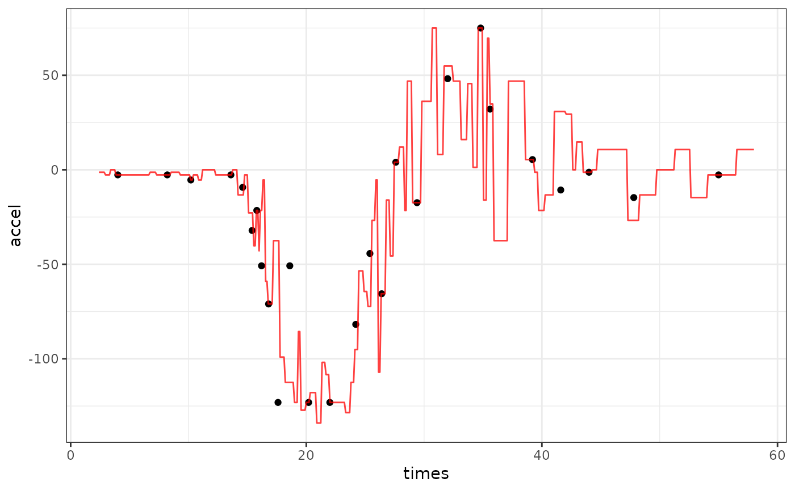

nn_adjust.RdFor regression models (i.e., predicting numeric outcomes), this function compares a predicted value to the predictions from the one data set and uses their values to increase or decrease the original prediction.
nn_adjust(wflow, .data, ...)
# Default S3 method
nn_adjust(wflow, .data, ...)
# S3 method for class 'workflow'
nn_adjust(wflow, .data, butcher = FALSE, ...)A fitted workflows::workflow() object.
A data frame containing the predictors and outcome data used
to create wflow. These should be in the same format as they were given to
the workflow (i.e., not processed by a recipe, etc.).
Not currently used.
A logical: should butcher::butcher() be used to trim the
workflow's size?
An object of class nn_adjust. It contains the data set, fitted
workflow, and other details.
Gower’s method finds the K data points that are most similar to the sample being predicted. This distance method is appropriate for qualitative and quantitative predictors and does not require normalization.
For the \(i=1\ldots K\) nearest neighbors, the method computes the adjusted predicted value based on
$$\widehat{a}^*_i = y_i + ( \widehat{y}_{new} - \widehat{y}_i)$$
then takes a weighted mean as the final predicted value. The weights are the inverse of the Gower distance plus a small constant (defaulted to 0.5 but is changeable).
The number of neighbors does not need to be declared until the adjustment is
executed by predict.nn_adjust() or augment.nn_adjust().
Quinlan R (1993). "Combining instance–based and model–based learning." Proceedings of the Tenth International Conference on Machine Learning, pp. 236-243. Gower, J (1971). "A general coefficient of similarity and some of its properties." Biometrics, pp. 857-871.
if (rlang::is_installed(c("ggplot2", "parsnip", "rpart", "MASS"))) {
library(workflows)
library(dplyr)
library(parsnip)
library(ggplot2)
# ------------------------------------------------------------------------------
# Use the 1D motorcycle helmet data as an example
data(mcycle, package = "MASS")
# Use every fifth data point as a test point
in_test <- ( 1:nrow(mcycle) ) %% 5 == 0
cycl_train <- mcycle[-in_test, ]
cycl_test <- mcycle[ in_test, ]
# A grid to show the predicted lines
mcycle_grid <- tibble(times = seq(2.4, 58, length.out = 500))
# ------------------------------------------------------------------------------
# Fit a decision tree
cart_spec <- decision_tree() %>% set_mode("regression")
cart_fit <-
workflow(accel ~ times, cart_spec) %>%
fit(data = cycl_train)
raw_pred <- augment(cart_fit, mcycle_grid)
raw_pred %>%
ggplot(aes(x = times)) +
geom_point(data = cycl_test, aes(y = accel)) +
geom_line(aes(y = .pred), col = "blue", alpha = 3 / 4) +
theme_bw()
# ------------------------------------------------------------------------------
# Get adjusted predictions
adj_obj <- nn_adjust(cart_fit, cycl_train)
adj_pred <- augment(adj_obj, mcycle_grid, neighbors = 10)
adj_pred %>%
ggplot(aes(x = times)) +
geom_point(data = cycl_test, aes(y = accel)) +
geom_line(aes(y = .pred), col = "orange", alpha = 3 / 4) +
theme_bw()
# 1 neighbor is usually pretty bad
adj_pred_1 <- augment(adj_obj, mcycle_grid, neighbors = 1)
adj_pred_1 %>%
ggplot(aes(x = times)) +
geom_point(data = cycl_test, aes(y = accel)) +
geom_line(aes(y = .pred), col = "red", alpha = 3 / 4) +
theme_bw()
}
